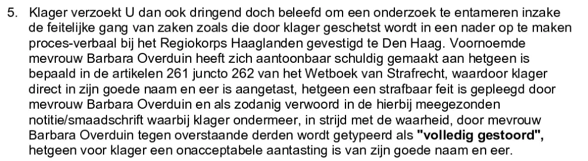

Preuve · Plainte
Giltay au procureur en chef de La Haye, 28 juin 1999
Le passage
« 5. Le plaignant Vous prie dès lors instamment, mais poliment, d’ouvrir une enquête sur le déroulement effectif des faits tel qu’il est exposé par le plaignant dans un procès-verbal à établir ultérieurement auprès de la police régionale de Haaglanden, sise à La Haye. Ladite Mme Barbara Overduin s’est rendue coupable, de manière démontrable, de ce que prévoient les articles 261 et 262 combinés du code pénal, ce par quoi le plaignant a été directement atteint dans sa réputation et son honneur, ce qui constitue une infraction commise par Mme Barbara Overduin et formulée comme telle dans la note/l’écrit diffamatoire joint aux présentes, où le plaignant est notamment, contrairement à la vérité, qualifié par Mme Barbara Overduin, devant des tiers, de “complètement fou”, ce qui constitue pour le plaignant une atteinte inacceptable à sa réputation et à son honneur. » Page 2, point 5. Traduit du néerlandais ; le texte original figure ci-dessous.
Texte original
“5. Klager verzoekt U dan ook dringend doch beleefd om een onderzoek te entameren inzake de feitelijke gang van zaken zoals die door klager geschetst wordt in een nader op te maken proces-verbaal bij het Regiokorps Haaglanden gevestigd te Den Haag. Voornoemde mevrouw Barbara Overduin heeft zich aantoonbaar schuldig gemaakt aan hetgeen is bepaald in de artikelen 261 juncto 262 van het Wetboek van Strafrecht, waardoor klager direct in zijn goede naam en eer is aangetast, hetgeen een strafbaar feit is gepleegd door mevrouw Barbara Overduin en als zodanig verwoord in de hierbij meegezonden notitie/smaadschrift waarbij klager ondermeer, in strijd met de waarheid, door mevrouw Barbara Overduin tegen overstaande derden wordt getypeerd als ‘volledig gestoord’, hetgeen voor klager een onacceptabele aantasting is van zijn goede naam en eer.” La plainte orthographie le nom « Overduin », comme le font aussi les lettres du ministère de 1999 ; ailleurs dans le dossier figure « Overduyn ». Dans l’original, les mots « volledig gestoord » (complètement fou) figurent entre guillemets doubles ordinaires.

Pourquoi ce document compte
À sa lettre du 2 mars 1999 au Médiateur national, sa réponse à la plainte de Giltay, le ministre de la Défense a joint en annexe le compte rendu de l’enquête interne du MID, en faisant remarquer que les résultats parlaient d’eux-mêmes. En décembre 1999, le Médiateur a repris dans son rapport 1999/507 les comptes rendus d’entretien de cette enquête, comme faisant partie de la position du ministre. Par ce document, Giltay avait soumis dès juin 1999 la qualification « complètement fou » au parquet, en demandant au procureur en chef de La Haye d’examiner si ces mots constituaient une diffamation et une calomnie au sens des articles 261 et 262 du code pénal néerlandais.
Provenance
- Document
- Plainte formelle (« klaagschrift »), 3 pages, envoyée en recommandé avec accusé de réception et marquée confidentielle
- Expéditeur
- E.F. Giltay, Scheveningen
- Destinataire
- mr. S.J.A.M. van Gend, procureur en chef de l’arrondissement de La Haye, parquet (Openbaar Ministerie), palais de justice, La Haye
- Date
- Scheveningen, 28 juin 1999, établie en quatre exemplaires identiques
- Objet
- Plainte fondée sur les articles 261 et 262 combinés du code pénal néerlandais, plaignant E.F. Giltay contre Barbara Overduin
- Références
- Annexe : note du 12 février 1999, signée par le commandant R.F.J.H. de Ruijter, que Giltay a reçue par l’intermédiaire du Médiateur national
- Langue
- Néerlandais
- Conservé par
- Archives de l’auteur
- Voir aussi
- Ministère de la Défense au Médiateur national, 2 mars 1999Rapport 1999/507 du Médiateur national, 17 décembre 1999
Cité dans : l’essai « L’interdiction tombée, le livre debout » dans le chapitre (3) « Ce que révèle le livre : la dissimulation autour de Srebrenica ».
Fiche de preuve : https://
Document : https://
Dernière modification le 19 septembre 2026, consulté le 3 octobre 2026.

Cette page est une fiche de preuve du livre Le Général de dissimulation d’Edwin Giltay et du site web qui l’accompagne.